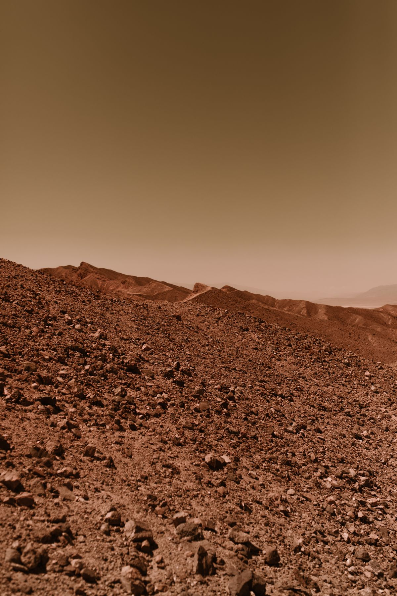

Planetary Geology · Sheet 01 of the Practice
An orbital map is an argument, not a photograph.
Landing-site geological assessment, orbital-data interpretation and analogue fieldwork for space agencies' science teams, instrument groups and universities — every claim on the map traceable to an observation, every age printed with its error bars left on.
One thing first: nobody has stood on the ground this practice maps. A map of another world is an inference stack — photons, models, judgement — and the honest product is the stack made visible: what was observed, what was inferred, and how wide the uncertainty runs. If you want certainty, geology is the wrong shop, on any planet.

16Years in planetary science
9Mission studies supported
6Analogue expeditions, Iceland to the Atacama
214Map sheets & study reports delivered
1Landing ellipse moved on her recommendation
The Instrument · Sheet 01
The sol converter
Every other world is a field site you reach by arithmetic, and the first sum in any Mars study is the clock. Surface operations run on sols; budgets, shifts and lives run on Earth days. The two drift apart by 39 minutes 35 seconds every single sol — plan a 90-sol mission on Earth days and you have quietly mislaid two and a half days. This converter runs on the standard printed figures, with the working shown.
The printed constants — the only numbers the converter uses
1 sol (one Mars solar day) = 88,775 seconds = 24 h 39 m 35 s · 1 Earth day = 86,400 seconds · 1 Mars year = 668.6 sols. The sol figure is the standard mission-planning value; a sol measured at one landing site differs from it by seconds, which matters to navigators and not to schedules.
Step the sols
Steppers · slider · quick sets · 1 – 669 sols
30SOLS ON MARS TIME
1 sol — a single shift669 — a full Mars year, rounded
Total seconds2,663,250 s
On Earth clocks30 d 19 h 47 m 30 s
Share of a Mars year30 ÷ 668.6 = 4.5% of one Mars year · 638.6 sols of the year remain
Why the drift is not trivia
Read before you schedule anything
A team working Mars time shifts its day later by 39 m 35 s per sol. Inside a fortnight the surface crew is eating breakfast at midnight Earth time; inside a prime mission the two clocks have lapped each other more than twice. Studies from this practice are therefore delivered with both clocks printed on every schedule — sols for the surface plan, Earth days and dates for the people, the budget and the launch-vehicle paperwork.
The converter's range is deliberate: one sol (a single shift's planning) to 669 sols (the full Mars year of 668.6, rounded up). Longer than a year, you are not converting — you are doing mission design, and that is a study, not a widget.
| Figure | Value | Where it works |
|---|---|---|
| One sol | 88,775 s = 24 h 39 m 35 s | The converter's multiplier; the surface-operations clock. |
| One Earth day | 86,400 s | The converter's divisor; the clock budgets and people run on. |
| Daily drift | 2,375 s = 39 m 35 s | The difference of the two figures above — the amount the clocks separate, every sol. |
| One Mars year | 668.6 sols | The converter's comparison; the unit seasons and mission phases are planned in. |
The Register · What Is Sold
Four services, one standard of proof
Each service ends in the same artefact: a map or report in which every claim carries its evidence and its uncertainty. If a conclusion cannot be traced to an observation, it is labelled an inference — in the document, not in a footnote.
R.01
Landing-site geological assessment
Terrain, rock abundance, slopes and hazards read from orbital data for a proposed ellipse — including the recommendation nobody commissions but everybody needs: move it, shrink it, or say why not.
Booking — next phase window
R.02
Orbital-data interpretation & geological mapping
Geological maps from orbital imaging, topography and spectroscopy, with map units defined by stated criteria and every boundary traceable to the observation that put it there.
Booking — two sheet slots this quarter
R.03
Analogue expedition science
Field seasons in Earth terrain that resembles the target — Iceland, the Atacama, Utah — run to test a specific orbital interpretation, and written up whether the interpretation survives or not.
Booking — one season per year
R.04
Crater-count dating & uncertainty audit
Surface ages from crater statistics, delivered as the range the data actually supports, with the model dependence stated — and audits of other people's ages on the same terms.
Booking — short engagements welcome
The fee shape, in full: science-support days at €1,450, analogue field days at €1,850, report packages at €3,900 (standard) or €6,400 (with an independent peer-review panel). What moves the price is printed with the estimator below: data volume first, mission-phase deadlines second. Nothing is quoted per “planet”, and no fee buys a conclusion.
The Computation Sheet · Sheet 02
Programme estimator
The estimator runs on exactly the fee table printed beside it — the same figures quoted in proposals. It prices the work, not the answer: an assessment that recommends moving your ellipse costs the same as one that confirms it.
Build the programme
Steppers · printed rates · arithmetic shown
Science-support days
ASSESSMENT · INTERPRETATION · DATING — €1,450 / DAY
ASSESSMENT · INTERPRETATION · DATING — €1,450 / DAY
10
€14,500
Analogue field days
EXPEDITION SCIENCE, FIELD KIT INCL. — €1,850 / DAY
EXPEDITION SCIENCE, FIELD KIT INCL. — €1,850 / DAY
0
€0
Report package
PER STUDY, AS SELECTED ABOVE
€3,900
PER STUDY, AS SELECTED ABOVE
Programme total€18,400
Travel to analogue sites is charged at cost, agreed in advance, and never marked up. Embargoed mission data is handled under the client's NDA at no extra fee — discretion is not a line item.
What moves the price
Printed, in the order it moves it
1 · Data volume. A targeted set of orbital observations over one ellipse is days of work. A full regional mosaic with stereo topography is weeks. The estimator's day count is where this shows up — ask for the count to be justified line by line; it will be.
2 · Mission-phase deadlines. A study feeding a phase gate, a launch window or a review board carries a deadline that cannot slip, and it is priced as such. A study feeding a journal paper is not.
3 · Field logistics. An analogue season in Iceland costs less to mount than one in the high Atacama. The field day rate is constant; the travel at cost is not.
On the Record · Attached to Its Study
What a client said about the ellipse study
She told us the ellipse we loved was the wrong one, showed the working, and was right. It cost us a phase review. It would have cost us the landing.